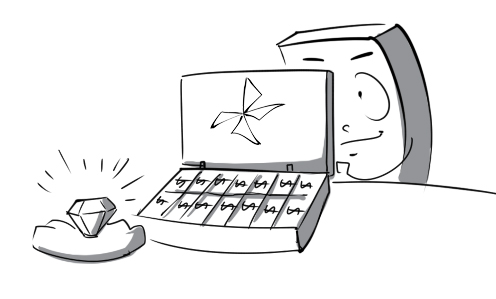
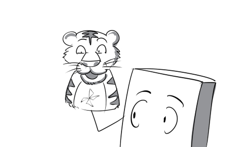
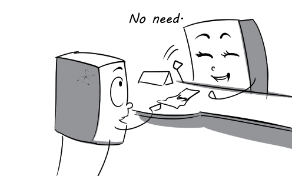

1.
accord: The witness' description of the murderer accords with the suspect's appearance.
(phù hợp) v
2.
accuse: His classmates accused him of stealing while he didn’t do it.
(buộc tội) v
3.
acquire: The young player acquired a reputation for scoring 2 goals for his team in the final.
(đạt được) v
4.
afford: The billionaire can surely afford this precious diamond.
(có đủ khả năng) v

5.
alter: Gasoline prices altered significantly during 2012.
(thay đổi) v
6.
appeal: Because of her great beauty, the princess appeals a lot of men in the kingdom.
(thu hút) v
7.
arise: There were a few tasks arising when I was about to go home.
(phát sinh) v
8.
aspire: Daniel aspired to be the next CEO of this company.
(khao khát) v
9.
associate: Many people immediately associate soft drinks with Coca-Cola and Pepsi.
(liên tưởng) v
10.
baffle: The question baffled Tina completely, she didn't understand what it was about.
(gây khó hiểu) v
11.
barter: Noah bartered his stamp collection for Leila's comics.
(trao đổi hàng hóa) v
12.
bear: Surprisingly, the baby could bear the pain of the shot.
(chịu đựng) v
13.
blaze: The whole forest was blazing out of control.
(cháy dữ dội) v
14.
block: The road was blocked by a fallen tree.
(làm trở ngại) v
15.
carnivore: Tiger is one of the most powerful carnivores in the animal kingdom.
(động vật ăn thịt) n

16.
caution: The ranger cautioned me to stay away from the forest at night.
(cảnh cáo) v
17.
compel: Lisa's Parents compelled her to marry Tom although she did not love him at all.
(bắt buộc) v
18.
confront: If you are a real man, you have to confront your own problems.
(đương đầu) v
19.
conquer: The British conquered India in 1858.
(xâm chiếm) v
20.
console: My wife always consoles me when I am sad.
(an ủi) v
21.
deceive: The salesman deceived the customer into buying the second-hand product.
(đánh lừa) v
22.
delicate: Be careful! These china teacups are very delicate.
(mỏng manh) a
23.
depreciate: Technological products like cell phones always depreciate in value by the time.
(giảm giá trị) v
24.
depress: It depresses us to know that we will have a difficult test tomorrow.
(gây chán nản) v
25.
discard: Moving to a new house, I discard all of my old toys.
(loại bỏ) v
26.
disrupt: Peter kept disrupting my work, which made me very angry.
(gây gián đoạn) v
27.
distinguish: We can distinguish between the two airplanes thanks to their logos.
(phân biệt) v
28.
donate: My school donated a lot of necessities to the national campaign for disaster relief.
(quyên góp) v
29.
eclipse: In the prince's eyes, all the other girls were completely eclipsed by Cinderella.
(lấn át) v
30.
elaborate: The salesman is elaborating on all the functions of this laptop.
(giải thích chi tiết) v
31.
empower: The vice-director was empowered to choose a new secretary.
(trao quyền) v
32.
encounter: Unfortunately, the adventure team encountered a fierce lion.
(chạm trán) v
33.
extend: It's so dangerous that the Sahara Desert extends for miles every year.
(mở rộng) v
34.
extinguish: The nurse asked Tom to extinguish his cigarette immediately.
(dập tắt) v
35.
fascinate: Football has always fascinated me.
(lôi cuốn) v
36.
federate: 200 member National Associations federated the World Taekwondo Federation.
(tổ chức thành liên đoàn) v
37.
flame: When the fire-engine arrived, the house was already in flames.
(ngọn lửa) n
38.
forbid: Jimmy's mother forbids him from swimming in this lake because it is very deep.
(ngăn cấm) v
39.
gentle: William is very gentle with women.
(dịu dàng) a

40.
glamorous: The model looks very glamorous in this dress.
(đặc biệt thu hút) a
41.
govern: President Obama has been governing the US since 2008.
(lãnh đạo) v
42.
gravity: It shocked Mr. Thomas when he realized the gravity of his son's injuries.
(tính nghiêm trọng) n
43.
halt: Halt! called the guard. You can't go any further without a permit.
(dừng) v
44.
heyday: In his heyday, Michael had a lot of beautiful girlfriends.
(thời hoàng kim) n

45.
hibernate: Bears always hibernate in their caves during winter.
(ngủ đông) v

46.
highlight: The teacher asked students to highlight main points of the book in green color.
(làm nổi bật) v
47.
hinder: Strong winds have hindered them in their efforts to move forward.
(cản trở) v
48.
inspire: This painter is mainly inspired by women's beauty.
(truyền cảm hứng) v
49.
intensify: The baby's constant crying intensified stress and made him go crazy.
(làm tăng lên) v
50.
isolate: The CEO was isolated by all the managers, which made him suffer from a lot of stress.
(cô lập) v
51.
launch: President Obama has launched a campaign for 2012 presidential election.
(bắt đầu) v
52.
legendary: The legendary Michael Jackson suddenly passed away in 2009.
(huyền thoại) a
53.
liberate: Peter liberated the bird from the cage and let it fly away.
(giải phóng) v
54.
likelihood: There is very little likelihood that this small apple tree can produce 100 tons of apples.
(khả năng) n
55.
literacy: In 1945, most Vietnamese people did not know how to read, but now the literacy rate is over 90%.
(sự biết chữ) n
56.
lure: People may be lured into buying those expensive products by smart advertising.
(cám dỗ) v
57.
manage: We have just set up some surveillance cameras in the factory to manage our employees' performance.
(quản lý) v
58.
manufacture: We work for the company that manufactures furniture.
(sản xuất) v
59.
mild: My father had a mild heart attack but everything is fine now.
(nhẹ) a
60.
nag: My mother has been nagging me to cut my hair.
(cằn nhằn) v
61.
negate: Milk will negate the effects of this medicine.
(làm mất đi) v
62.
negotiate: Mr. Thomas is negotiating with the kidnapper about the ransom.
(thương lượng) v
63.
notion: I agree with the notion that money can buy happiness.
(quan điểm) n
64.
object: Joey objects to the new business plan devised by his boss.
(phản đối) v
65.
objective: Mrs. Green gives an objective opinion about her own son.
(mục đích) a

66.
offensive: My boss usually shouted at me with offensive words.
(xúc phạm) a
67.
optimistic: The optimistic player was still happy when his team lost the game.
(lạc quan) a
68.
postpone: The flight was postponed because of some technical problems.
(trì hoãn) v
69.
preserve: My hometown is successful in preserving its flora.
(bảo tồn) v
70.
prolong: I decided to prolong my stay at this hotel by another day.
(kéo dài) v
71.
pursue: Adam plans to pursue a career in medicine.
(theo đuổi) v
72.
quote: Learn, learn, and learn, my professor quoted.
(trích dẫn) v
73.
refine: Peter is using a traditional way to refine oil.
(tinh chế) v
74.
repute: Meryl Streep is a actress of international repute.
(tiếng tăm) n
75.
retrieve: Neill bent down to retrieve his book, which were on the ground.
(lấy lại) v
76.
revise: The teacher asked me to revise my essay because it had too many mistakes.
(sửa lại) v
77.
revoke: His driving license was revoked because of his traffic violations.
(thu hồi) v
78.
sentence: Harry was sentenced to 5 years in prison because he stole a car.
(tuyên án) v
79.
shed: Mary succeeded in shedding weight for her wedding.
(loại bỏ) v
80.
speculate: Everybody speculates that Angelina and Brad will break up soon.
(suy đoán) v
81.
spontaneous: Peter broke into spontaneous applause when his favorite appeared.
(tự phát) a
82.
submit: I went to the office of academic affairs to submit my tuition.
(nộp) v
83.
sustain: There is a theory that Mars can sustain life.
(duy trì) v
84.
tangible: The police has tangible evidence to arrest him.
(rõ ràng) a
85.
theorize: The police are theorizing about what might have caused the fire.
(đưa ra giả thuyết) v
86.
tolerate: How can you tolerate the noise from the construction site?
(chịu đựng) v
87.
transact: The sale was transacted in conditions of the greatest secrecy.
(tiến hành (việc kinh doanh)) v
88.
undergo: My father underwent a delicate heart surgery.
(trải qua) v
89.
unify: We need to unify every countries to bring peace to the whole world.
(hợp nhất) v
90.
upgrade: David upgraded his computer's memory to 2GB.
(nâng cấp) v
91.
uprising: There is an uprising against the boss in the factory right now.
(cuộc nổi dậy) n
92.
vague: I only had a vague idea who the girl was.
(mơ hồ) a
93.
value: The winner will receive a prize to the value of $1 000.
(giá trị) n
94.
venture: They ventured into the dangerous forest at night.
(mạo hiểm) v
95.
vital: Water, light, fertilizer and beneficial insects are vital to tree growth.
(quan trọng) a

96.
waive: My university decided to waive tuition fees for poor students.
(bỏ, từ bỏ) v

97.
weird: Everyone makes fun of her weird hairstyle.
(kỳ quặc) a
98.
withdraw: American troops began withdrawing from Iraq on Wednesday.
(rút lui) v

99.
wrest: I managed to wrest my diary from his hand.
(cố giành lấy) v